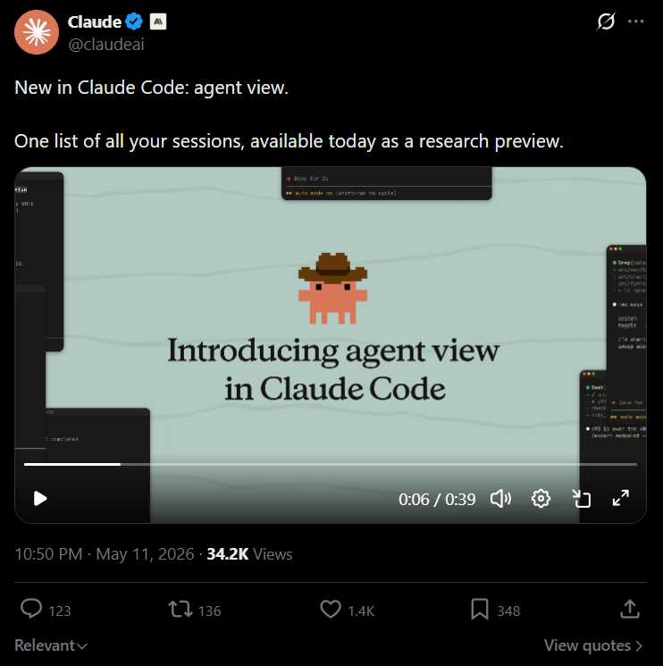
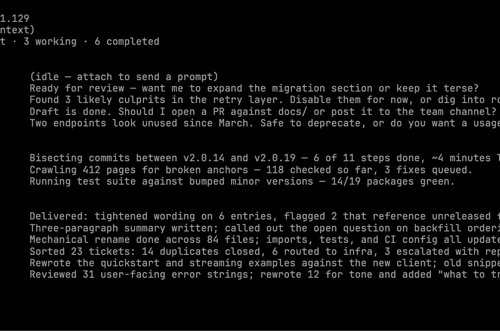

Announced · May 11
x.com/claudeai · 34.2K views

Available today · Research Preview
Before agent view
Terminal tabs. Tmux grids.
Mental ledger.
Mental ledger.
3
modes
5
plans
How it works

SEE
Press ← or claude agents
Every session at a glance
01
PEEK
Read the last turn. Reply inline.
No context switch
02
BG
/bg · claude --bg [task]
Push or launch into the view
03
How devs use it
Dispatch ideas, return to PRs ready for review
Babysit long-running jobs with next-run time
Bounce between sessions without losing context
Scan status indicators to see what shipped
Available today
Opt in with one command.
Pro
Max
Team
Enterprise
Claude API
$claude agents